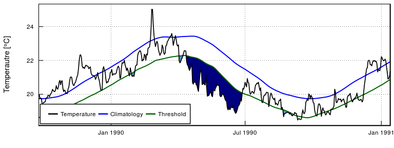
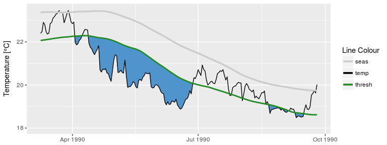

The heatwaveR package is a project-wide update to the RmarineHeatWaves package, which is itself a translation of the original Python code written by Eric C. J. Oliver. The heatwaveR package also uses the same naming conventions for objects, columns, and arguments as the Python code.
The heatwaveR R package contains the original functions from the RmarineHeatWaves package that calculate and display marine heatwaves (MHWs) according to the definition of Hobday et al. (2016) as well as calculating and visualising marine cold-spells (MCSs) as first introduced in Schlegel et al. (2017a). It also contains the functionality to calculate the categories of MHWs as outlined in Hobday et al. (2018).
This package does what RmarineHeatWaves does, but faster. The entire package has been deconstructed and modularised, and slow portions of the code are being implemented in C++. C++ has already replaced some of the bottlenecks that slowed down the climatology creation portions of the code, and we will slowly but surely improve the efficiency and speed in other portions of the code too. Currently the R code runs about as fast as the original python functions, at least in as far as applying it to single time series of temperatures. Readers familiar with both languages will know about the ongoing debate around the relative speed of the two languages. In our experience, R can be as fast as python, provided that attention is paid to finding ways to reduce the computational inefficiencies that stem from i) the liberal use of complex and inefficient non-atomic data structures, such as data frames; ii) the reliance on non-vectorised calculations such as loops; and iii) lazy (but convenient) coding that comes from drawing too heavily on the tidyverse suite of packages. We will continue to ensure that heatwaveR becomes more-and-more efficient so that it can be applied to large gridded data products with ease.
This new package was developed and released in order to better accommodate the inclusion of the definitions of atmospheric heatwaves in addition to MHWs. Additionally, heatwaveR also provides the first implementation of a definition for a ‘compound heatwave’. There are currently multiple different definitions for this type of event and each of which has arguments provided for it within the ts2clm() and detect_event() functions.
This package may be installed from CRAN by typing the following command into the console:
install.packages("heatwaveR")
Or the development version may be installed from GitHub with:
devtools::install_github("robwschlegel/heatwaveR")
The functions
| Function | Description |
|---|---|
ts2clm() |
Constructs seasonal and threshold climatologies as per the definition of Hobday et al. (2016). |
detect_event() |
The main function which detects the events as per the definition of Hobday et al. (2016). |
block_average() |
Calculates annual means for event metrics. |
category() |
Applies event categories to the output of detect_event() based on Hobday et al. (in review). |
exceedance() |
A function similar to detect_event() but that detects consecutive days above/below a given static threshold. |
event_line() |
Creates a line plot of heatwaves or cold-spells. |
lolli_plot() |
Creates a timeline of selected event metrics. |
geom_flame() |
Creates flame polygons of heatwaves or cold-spells. |
geom_lolli() |
Creates a lolliplot timeline of selected event metric. |
The package also provides data of observed SST records for three historical MHWs: the 2011 Western Australia event, the 2012 Northwest Atlantic event and the 2003 Mediterranean event.
The heatwave metrics
The function will return a list of two tibbles (see the ‘tidyverse’), clim and event, which are the climatology and MHW (or MCS) events, respectively. The climatology contains the full time series of daily temperatures, as well as the the seasonal climatology, the threshold and various aspects of the events that were detected. The software was designed for detecting extreme thermal events, and the units specified below reflect that intended purpose. However, the various other kinds of extreme events may be detected according to the ‘marine heatwave’ specifications, and if that is the case, the appropriate units need to be determined by the user.
| Climatology metric | Description |
|---|---|
doy |
Julian day (day-of-year). For non-leap years it runs 1…59 and 61…366, while leap years run 1…366. This column will be named differently if another name was specified to the doy argument. |
t |
The date of the temperature measurement. This column will be named differently if another name was specified to the x argument. |
temp |
If the software was used for the purpose for which it was designed, seawater temperature [deg. C] on the specified date will be returned. This column will of course be named differently if another kind of measurement was specified to the y argument. |
seas |
Climatological seasonal cycle [deg. C]. |
thresh |
Seasonally varying threshold (e.g., 90th percentile) [deg. C]. |
var |
Seasonally varying variance (standard deviation) [deg. C]. |
threshCriterion |
Boolean indicating if temp exceeds thresh. |
durationCriterion |
Boolean indicating whether periods of consecutive threshCriterion are >= minDuration. |
event |
Boolean indicating if all criteria that define a MHW or MCS are met. |
event_no |
A sequential number indicating the ID and order of occurrence of the MHWs or MCSs. |
The events are summarised using a range of event metrics:
| Event metric | Description |
|---|---|
event_no |
A sequential number indicating the ID and order of the events. |
index_start |
Start index of event. |
index_peak |
Peak index of event. |
index_end |
Index of event peak. |
duration |
Duration of event [days]. |
date_start |
Start date of event [date]. |
date_peak |
Date of event peak [date]. |
date_end |
End date of event [date]. |
intensity_mean |
Mean intensity [deg. C]. |
intensity_max |
Maximum (peak) intensity [deg. C]. |
intensity_var |
Intensity variability (standard deviation) [deg. C]. |
intensity_cumulative |
Cumulative intensity [deg. C x days]. |
rate_onset |
Onset rate of event [deg. C / day]. |
rate_decline |
Decline rate of event [deg. C / day]. |
intensity_max_relThresh, intensity_mean_relThresh, intensity_var_relThresh, and intensity_cumulative_relThresh are as above except relative to the threshold (e.g., 90th percentile) rather than the seasonal climatology.
intensity_max_abs, intensity_mean_abs, intensity_var_abs, and intensity_cumulative_abs are as above except as absolute magnitudes rather than relative to the seasonal climatology or threshold.
Note that rate_onset and rate_decline will return NA when the event begins/ends on the first/last day of the time series. This may be particularly evident when the function is applied to large gridded data sets. Although the other metrics do not contain any errors and provide sensible values, please take this into account in the interpretation of the output.
Examples of detection and graphing
The detect_event() function is the package’s core function. Here is the detect_event() function applied to the Western Australian test data, which are also discussed by Hobday et al. (2016):
library(heatwaveR); library(dplyr); library(ggplot2)
ts <- ts2clm(sst_WA, climatologyPeriod = c("1983-01-01", "2012-12-31"))
mhw <- detect_event(ts)
mhw$event %>%
dplyr::ungroup() %>%
dplyr::select(event_no, duration, date_start, date_peak, intensity_mean, intensity_max, intensity_cumulative) %>%
dplyr::arrange(-intensity_cumulative) %>%
head(5)
#> # A tibble: 5 x 7
#> event_no duration date_start date_peak intensity_mean intensity_max
#> <int> <int> <date> <date> <dbl> <dbl>
#> 1 22 95 1999-05-13 1999-05-22 2.50 3.60
#> 2 42 60 2011-02-06 2011-02-28 3.21 6.51
#> 3 49 47 2012-01-11 2012-01-27 2.23 3.30
#> 4 50 46 2012-03-01 2012-04-10 1.99 2.96
#> 5 41 40 2010-12-24 2011-01-28 2.16 3.27
#> # ... with 1 more variable: intensity_cumulative <dbl>The corresponding event_line() and lolli_plot(), which represent the massive Western Australian heatwave of 2011, look like this:
event_line(mhw, spread = 100, metric = "intensity_cumulative", start_date = "2010-11-01", end_date = "2011-06-30")lolli_plot(mhw)
The event_line() and lolli_plot() functions were designed to work directly on one of the dataframes in the list returned by detect_event(). If more control over the figures is required, it may be useful to create them in ggplot2 by stacking geoms. We specifically created two new ggplot2 geoms to reproduce the functionality of event_line() and lolli_plot(). These functions are more general in their functionality and can be used outside of the heatwaveR package too. To apply them to MHWs and MCSs first requires that we access the clim or event dataframes within the list that is produced by detect_event(). Here is how:
mhw2 <- mhw$clim %>%
slice(10580:10690) # select the region of the time series of interest
ggplot(mhw2, aes(x = t, y = temp, y2 = thresh)) +
geom_flame() +
geom_text(aes(x = as.Date("2011-02-26"), y = 25.8, label = "the Destroyer\nof Kelps"))
ggplot(mhw$event, aes(x = date_start, y = intensity_max)) +
geom_lolli(colour = "salmon", colour_n = "red", n = 3) +
geom_text(colour = "black", aes(x = as.Date("2006-08-01"), y = 5,
label = "The marine heatwaves\nTend to be left skewed in a\nGiven time series"))

The default output of these function may not be to your liking. If so, not to worry. As ggplot2 geoms, they are highly malleable. For example, if we were to choose to reproduce the format of the MHWs as seen in Hobday et al. (2016), the code would look something like this:
# It is necessary to give geom_flame() at least one row on either side of the event in order to calculate the polygon corners smoothly
mhw_top <- mhw2 %>%
slice(49:110)
ggplot(data = mhw2, aes(x = t)) +
geom_flame(aes(y = temp, y2 = thresh, fill = "all"), show.legend = T) +
geom_flame(data = mhw_top, aes(y = temp, y2 = thresh, fill = "top"), show.legend = T) +
geom_line(aes(y = temp, colour = "temp")) +
geom_line(aes(y = thresh, colour = "thresh"), size = 1.0) +
geom_line(aes(y = seas, colour = "seas"), size = 1.2) +
scale_colour_manual(name = "Line Colour",
values = c("temp" = "black", "thresh" = "forestgreen", "seas" = "grey80")) +
scale_fill_manual(name = "Event Colour", values = c("all" = "salmon", "top" = "red")) +
scale_x_date(date_labels = "%b %Y") +
guides(colour = guide_legend(override.aes = list(fill = NA))) +
labs(y = expression(paste("Temperature [", degree, "C]")), x = NULL)
Should we not wish to highlight any events with geom_lolli(), it would look like this:
ggplot(mhw$event, aes(x = date_start, y = intensity_cumulative)) +
geom_lolli(colour = "salmon")The calculation and visualisation of cold-spells is also accommodated within this package. Here is a cold spell detected in the OISST data for Western Australia:
ts_10th <- ts2clm(sst_WA, climatologyPeriod = c("1983-01-01", "2012-12-31"), pctile = 10)
mcs <- detect_event(ts_10th, coldSpells = TRUE)
mcs$event %>%
dplyr::ungroup() %>%
dplyr::select(event_no, duration, date_start,
date_peak, intensity_mean, intensity_max, intensity_cumulative) %>%
dplyr::arrange(intensity_cumulative) %>%
head(5)
#> # A tibble: 5 x 7
#> event_no duration date_start date_peak intensity_mean intensity_max
#> <int> <int> <date> <date> <dbl> <dbl>
#> 1 16 76 1990-04-13 1990-05-11 -2.54 -3.22
#> 2 54 58 2003-12-19 2004-01-23 -1.80 -2.66
#> 3 71 52 2014-04-14 2014-05-05 -1.82 -2.57
#> 4 8 38 1986-06-24 1986-07-17 -2.01 -2.95
#> 5 51 32 2003-09-08 2003-09-16 -1.56 -2.12
#> # ... with 1 more variable: intensity_cumulative <dbl>The plots showing the cold-spells look like this:
event_line(mcs, spread = 200, metric = "intensity_cumulative",
start_date = "1990-01-01", end_date = "1990-08-30")
lolli_plot(mcs)
Cold spell figures may be created as geoms in ggplot2, too:
mcs2 <- mcs$clim %>%
slice(2990:3190)
# # Note that the plot centres on the polygons, so it may be necessary to manually zoom out a bit
ggplot(data = mcs2, aes(x = t)) +
geom_flame(aes(y = thresh, y2 = temp), fill = "steelblue3", show.legend = F) +
geom_line(aes(y = temp, colour = "temp")) +
geom_line(aes(y = thresh, colour = "thresh"), size = 1.0) +
geom_line(aes(y = seas, colour = "seas"), size = 1.2) +
scale_colour_manual(name = "Line Colour",
values = c("temp" = "black", "thresh" = "forestgreen", "seas" = "grey80")) +
scale_y_continuous(limits = c(18, 23.5)) +
scale_x_date(date_labels = "%b %Y") +
labs(y = expression(paste("Temperature [", degree, "C]")), x = NULL)
ggplot(mcs$event, aes(x = date_start, y = intensity_cumulative)) +
geom_lolli(colour = "steelblue3", colour_n = "navy", n = 7) +
xlab("Date") +
ylab(expression(paste("Cumulative intensity [days x ", degree, "C]")))
The exceedance function
In addition to the calculation of extreme events, consecutive days over a given static threshold may be calculated with the exceedance() function.
exc_25 <- exceedance(ts, threshold = 25)
exc_25$exceedance %>%
ungroup() %>%
select(exceedance_no, duration, date_start, date_peak, intensity_mean, intensity_cumulative) %>%
dplyr::arrange(-intensity_cumulative) %>%
head(5)
#> # A tibble: 5 x 6
#> exceedance_no duration date_start date_peak intensity_mean
#> <int> <int> <date> <date> <dbl>
#> 1 7 52 2011-02-08 2011-02-28 1.67
#> 2 6 25 2008-04-03 2008-04-14 0.980
#> 3 10 41 2012-03-03 2012-04-10 0.439
#> 4 2 17 1999-05-13 1999-05-22 0.856
#> 5 5 10 2000-05-03 2000-05-04 0.697
#> # ... with 1 more variable: intensity_cumulative <dbl>Which, when plotted with ggplot2 code would look like this:
exc_25_thresh <- exc_25$threshold %>%
slice(9500:9866)
ggplot(data = exc_25_thresh, aes(x = t)) +
geom_flame(aes(y = temp, y2 = thresh, fill = "all"), show.legend = F) +
geom_line(aes(y = temp, colour = "temp")) +
geom_line(aes(y = thresh, colour = "thresh"), size = 1.0) +
# geom_line(aes(y = seas, colour = "seas"), size = 1.2) +
scale_colour_manual(name = "Line Colour",
values = c("temp" = "black", "thresh" = "forestgreen")) +
scale_fill_manual(name = "Event Colour", values = c("all" = "salmon")) +
guides(colour = guide_legend(override.aes = list(fill = NA))) +
scale_x_date(date_labels = "%b %Y") +
labs(y = expression(paste("Temperature [", degree, "C]")), x = NULL)
The same function may be used to calculate consecutive days below a threshold, too.
exc_19 <- exceedance(ts, threshold = 19, below = TRUE)
exc_19$exceedance %>%
dplyr::ungroup() %>%
dplyr::select(exceedance_no, duration, date_start, date_peak, intensity_mean, intensity_cumulative) %>%
dplyr::arrange(intensity_cumulative) %>%
head(5)
#> # A tibble: 5 x 6
#> exceedance_no duration date_start date_peak intensity_mean
#> <int> <int> <date> <date> <dbl>
#> 1 17 46 2003-09-06 2003-09-16 -0.601
#> 2 16 31 2002-09-08 2002-09-25 -0.848
#> 3 13 24 1997-09-03 1997-09-15 -0.769
#> 4 20 25 2005-09-26 2005-10-12 -0.542
#> 5 12 18 1997-08-13 1997-08-22 -0.694
#> # ... with 1 more variable: intensity_cumulative <dbl>And were one to desire a visualisation of these data it could be produced with the following code:
exc_19_thresh <- exc_19$threshold %>%
slice(1500:1866)
ggplot(data = exc_19_thresh, aes(x = t)) +
geom_flame(aes(y = thresh, y2 = temp), fill = "steelblue3", show.legend = F) +
geom_line(aes(y = temp, colour = "temp")) +
geom_line(aes(y = thresh, colour = "thresh"), size = 1.0) +
scale_colour_manual(name = "Line Colour",
values = c("temp" = "black", "thresh" = "forestgreen")) +
scale_y_continuous(limits = c(18, 23.5)) +
scale_x_date(date_labels = "%b %Y") +
labs(y = expression(paste("Temperature [", degree, "C]")), x = NULL)
Working with gridded SST data
We can also load the gridded 0.25 degree Reynolds OISST data and apply the function pixel by pixel over all of the days of data. The example data used here have 93 longitude steps, 43 latitude steps, and cover 12797 days (1981 to 2016). We apply the detect_event() function to these data, fit a generalised linear model (GLM), and then plot the trend per decade of the marine heatwave count. In other words, have marine heatwaves become more or less frequent in recent years? Under climate change we can expect that extreme events would tend to occur more frequently and be of greater intensity. Indeed, we can clearly see in the figure below of the result of the GLM, how the Agulhas Current has been experiencing marine heatwaves more frequently in recent decades. But there are two smaller areas, one along the western side of the Cape Peninsula in the Benguela Upwelling system and another around the Eastern Cape Province near Algoa Bay, where the frequency of marine heatwaves seems to have actually been decreasing – although the P-value of the decreasing trend is > 0.05, and therefore not significant.
Please read the package vignette to see how to load a netCDF file with the OISST data, apply the detect_event() function to the whole 3D array of data, and then fit the GLM and plot the data.
Categories
The classification of MHWs under the naming scheme first proposed by Hobday et al. (in review) may also be calculated and visualised with the heatwaveR package using the category() function on the output of the detect_event() function. Note that one may control the output for the names of the events by providing ones own character string for the name argument. Because we have calculated MHWs on the Western Australia data, we provide the name “WA” below.
tail(category(mhw, S = TRUE, name = "WA"))
#> # A tibble: 6 x 11
#> event_no event_name peak_date category i_max duration p_moderate
#> <int> <fct> <date> <chr> <dbl> <int> <dbl>
#> 1 38 WA 2010 2010-09-29 II Strong 2.58 18 78
#> 2 40 WA 2010 2010-12-02 II Strong 2.66 15 73
#> 3 31 WA 2008 2008-04-14 III Severe 3.77 34 62
#> 4 22 WA 1999 1999-05-22 II Strong 3.6 95 59
#> 5 58 WA 2014 2014-08-31 II Strong 2.2 12 58
#> 6 42 WA 2011 2011-02-28 IV Extreme 6.51 60 47
#> # ... with 4 more variables: p_strong <dbl>, p_severe <dbl>,
#> # p_extreme <dbl>, season <chr>Note that this functions expects the data to have been collected in the southern hemisphere, hence the argument S = TRUE. If they were not, one must set S = FALSE as seen in the example below. This ensures that the correct seasons are attributed to the event.
res_Med <- detect_event(ts2clm(sst_Med, climatologyPeriod = c("1983-01-01", "2012-12-31")))
tail(category(res_Med, S = FALSE, name = "Med"))
#> # A tibble: 6 x 11
#> event_no event_name peak_date category i_max duration p_moderate
#> <int> <fct> <date> <chr> <dbl> <int> <dbl>
#> 1 55 Med 2011 2011-05-25 II Strong 4.05 8 62
#> 2 23 Med 1999 1999-04-06 II Strong 1.88 5 60
#> 3 28 Med 2003 2003-06-20 II Strong 5.02 30 57
#> 4 62 Med 2012 2012-08-20 II Strong 4.22 18 56
#> 5 44 Med 2007 2007-04-25 III Severe 4.02 19 42
#> 6 70 Med 2014 2014-10-18 II Strong 3.31 110 35
#> # ... with 4 more variables: p_strong <dbl>, p_severe <dbl>,
#> # p_extreme <dbl>, season <chr>A quick and easy visualisation of the categories of a MHW may be accomplished with event_line() by setting the category argument to TRUE.
event_line(mhw, spread = 100, start_date = "2010-11-01", end_date = "2011-06-30", category = TRUE)
Were one to want to visualise the categories of a MHW ‘by hand’, the following code will provide a good starting point.
# Create category breaks and select slice of data.frame
clim_cat <- mhw$clim %>%
dplyr::mutate(diff = thresh - seas,
thresh_2x = thresh + diff,
thresh_3x = thresh_2x + diff,
thresh_4x = thresh_3x + diff) %>%
dplyr::slice(10580:10690)
# Set line colours
lineColCat <- c(
"Temperature" = "black",
"Climatology" = "gray20",
"Threshold" = "darkgreen",
"2x Threshold" = "darkgreen",
"3x Threshold" = "darkgreen",
"4x Threshold" = "darkgreen"
)
# Set category fill colours
fillColCat <- c(
"Moderate" = "#ffc866",
"Strong" = "#ff6900",
"Severe" = "#9e0000",
"Extreme" = "#2d0000"
)
ggplot(data = clim_cat, aes(x = t, y = temp)) +
geom_flame(aes(y2 = thresh, fill = "Moderate")) +
geom_flame(aes(y2 = thresh_2x, fill = "Strong")) +
geom_flame(aes(y2 = thresh_3x, fill = "Severe")) +
geom_flame(aes(y2 = thresh_4x, fill = "Extreme")) +
geom_line(aes(y = thresh_2x, col = "2x Threshold"), size = 0.7, linetype = "dashed") +
geom_line(aes(y = thresh_3x, col = "3x Threshold"), size = 0.7, linetype = "dotdash") +
geom_line(aes(y = thresh_4x, col = "4x Threshold"), size = 0.7, linetype = "dotted") +
geom_line(aes(y = seas, col = "Climatology"), size = 0.7) +
geom_line(aes(y = thresh, col = "Threshold"), size = 0.7) +
geom_line(aes(y = temp, col = "Temperature"), size = 0.6) +
scale_colour_manual(name = NULL, values = lineColCat,
breaks = c("Temperature", "Climatology", "Threshold",
"2x Threshold", "3x Threshold", "4x Threshold")) +
scale_fill_manual(name = NULL, values = fillColCat, guide = FALSE) +
scale_x_date(date_labels = "%b %Y") +
guides(colour = guide_legend(override.aes = list(linetype = c("solid", "solid", "solid",
"dashed", "dotdash", "dotted")))) +
labs(y = expression(paste("Temperature [", degree, "C]")), x = NULL)
Presently the functionality for the detection of categories for MCSs has not been introduced into heatwaveR, but it is inbound.
References
Hobday, A.J. et al. (2016). A hierarchical approach to defining marine heatwaves, Progress in Oceanography, 141, pp. 227-238.
Schlegel, R. W., Oliver, E. C. J., Wernberg, T. W., Smit, A. J. (2017a). Nearshore and offshore co-occurrences of marine heatwaves and cold-spells. Progress in Oceanography, 151, pp. 189-205.
Schlegel, R. W., Oliver, E. C., Perkins-Kirkpatrick, S., Kruger, A., Smit, A. J. (2017b). Predominant atmospheric and oceanic patterns during coastal marine heatwaves. Frontiers in Marine Science, 4, 323.
Hobday, A. J., Oliver, E. C. J., Sen Gupta, A., Benthuysen, J. A., Burrows, M. T., Donat, M. G., Holbrook, N. J., Moore, P. J., Thomsen, M. S., Wernberg, T., Smale, D. A. (2018). Categorizing and naming marine heatwaves. Oceanography 31(2).
Acknowledgements
The Python code was written by Eric C. J. Oliver.
Contributors to the Marine Heatwaves definition and its numerical implementation include Alistair J. Hobday, Lisa V. Alexander, Sarah E. Perkins, Dan A. Smale, Sandra C. Straub, Jessica Benthuysen, Michael T. Burrows, Markus G. Donat, Ming Feng, Neil J. Holbrook, Pippa J. Moore, Hillary A. Scannell, Alex Sen Gupta, and Thomas Wernberg.
The translation from Python to R was done by A. J. Smit and the graphing functions were contributed to by Robert. W. Schlegel.
Contact
Robert W. Schlegel Department for Biodiversity & Conservation Biology, University of the Western Cape, Private Bag X17, Bellville 7535, South Africa, E-mail: robwschlegel@gmail.com,